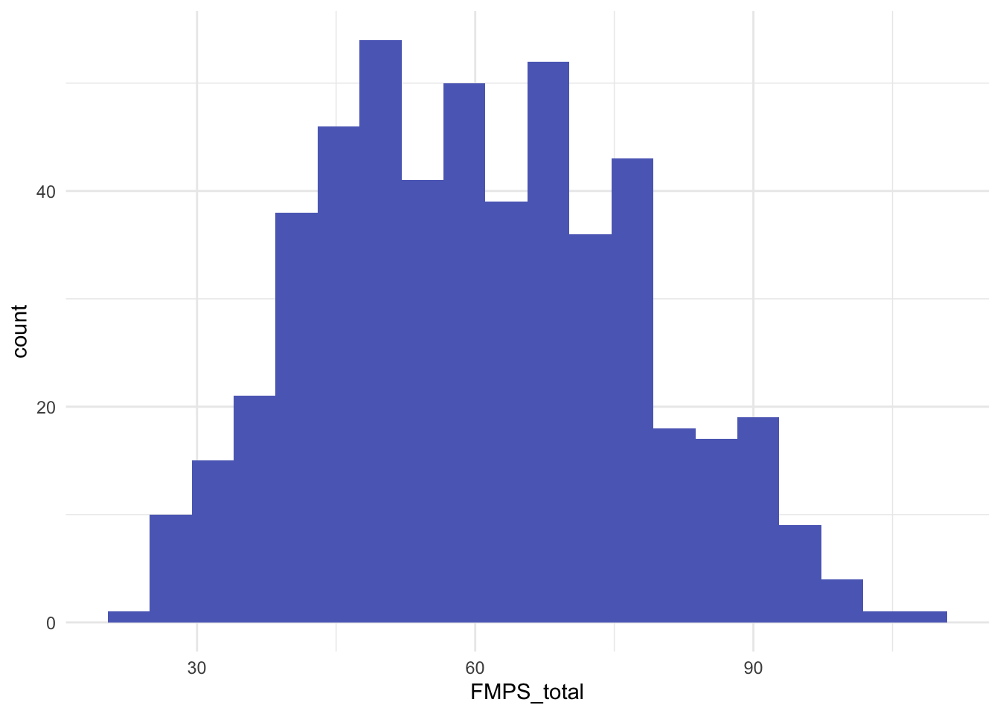
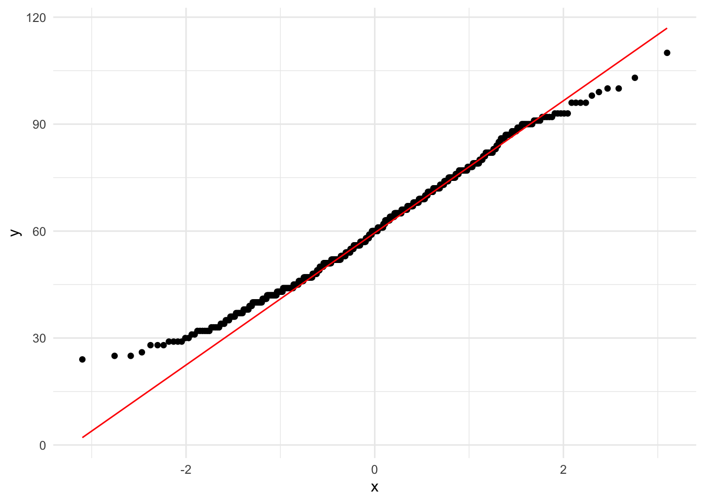

library(tidyverse)
df <- read_csv2("../assets/data/perfectionism_total_scores.csv")Basics: Working With Data in R
Introduction
This page covers the most practical basics you need before doing any statistics in R:
- loading data
- exploring structure
- handling missing values
- descriptive statistics
- basic tables and proportions
- random number generation
- checking simple distribution shapes
You can use any dataset, but for this tutorial we work with:
perfectionism_total_scores.csv Small psychological teaching dataset containing one continuous variable: total maladaptive perfectionism score (FMPS_total). The data were adapted from the de-identified adult sample in Ferrari et al. (2018) and simplified for classroom use. In the original study, maladaptive perfectionism was computed as a combined score of four Frost Multidimensional Perfectionism Scale (FMPS) subscales: Concern over Mistakes, Parental Expectations, Parental Criticism, and Doubts about Actions.
Original study: Ferrari, M., Yap, K., Scott, N., Einstein, D. A., & Ciarrochi, J. (2018). Self-compassion moderates the perfectionism and depression link in both adolescence and adulthood. PLOS ONE, 13(2), e0192022. https://doi.org/10.1371/journal.pone.0192022 
Questionnaires used in the original study:
- Frost Multidimensional Perfectionism Scale (FMPS) — 35 items. Used to derive maladaptive perfectionism (FMPS_total).
- Self-Compassion Scale – Short Form (SCS-SF) — 12 items. Total self-compassion score (SELF_C).
- Depression Anxiety Stress Scales – Short Form (DASS-21) — 21 items. Subscales for depression, anxiety, and stress.
Variables in our teaching file: - FMPS_total — total maladaptive perfectionism score (higher = more maladaptive perfectionism). - DASS_Depress — depression symptoms. - DASS_Anx — anxiety symptoms. - DASS_Stress — stress symptoms. - SELF_C — total self-compassion score.
Note: The teaching dataset keeps only variables needed for introductory analyses and may differ slightly in coding/format from the original supporting files.
Download the dataset (perfectionism_total_scores.csv)
1. First look at the data
Understanding your dataset is the very first step. Look at the variable names and data types. What type is the main score variable?
glimpse(df)Rows: 515
Columns: 10
$ PartID <dbl> 1, 2, 3, 5, 6, 7, 8, 9, 10, 12, 14, 15, 16, 18, 19, 21, 22…
$ FMPS_total <dbl> 47, 36, 54, 28, 69, 56, 51, 73, 79, 71, 66, 52, 49, 59, 43…
$ SELF_C <dbl> 2.384615, 4.076923, 3.423077, 5.000000, 2.000000, 2.615385…
$ DASS_Depres <dbl> 12, 9, 10, 11, 22, 14, 9, 7, 12, 8, 24, 11, 11, 20, 8, 8, …
$ DASS_Anx <dbl> 16, 8, 8, 8, 11, 12, 8, 8, 14, 14, 22, 9, 9, 14, 8, 7, 7, …
$ DASS_Stress <dbl> 14, 8, 16, 8, 21, 15, 7, 10, 20, 24, 24, 16, 14, 22, 7, 11…
$ FMPS_Av <dbl> -13.532, -24.532, -6.532, -32.532, 8.468, -4.532, -9.532, …
$ SELF_C_Av <dbl> -0.42838462, 1.26392308, 0.61007692, 2.18700000, -0.813000…
$ DASS_D_Av <dbl> -1.631, -4.631, -3.631, -2.631, 8.369, 0.369, -4.631, -6.6…
$ Int <dbl> 5.7969006, -31.0065609, -3.9850225, -71.1474840, -6.884484…summary(df) PartID FMPS_total SELF_C DASS_Depres
Min. : 1.0 Min. : 24.00 Min. :1.000 Min. : 7.00
1st Qu.:156.5 1st Qu.: 47.00 1st Qu.:2.231 1st Qu.: 9.00
Median :307.0 Median : 60.00 Median :2.731 Median :12.00
Mean :306.2 Mean : 60.53 Mean :2.813 Mean :13.63
3rd Qu.:452.0 3rd Qu.: 72.00 3rd Qu.:3.365 3rd Qu.:18.00
Max. :615.0 Max. :110.00 Max. :5.000 Max. :28.00
DASS_Anx DASS_Stress FMPS_Av SELF_C_Av
Min. : 7.00 Min. : 7.00 Min. :-36.532000 Min. :-1.8130000
1st Qu.: 8.00 1st Qu.:11.00 1st Qu.:-13.532000 1st Qu.:-0.5822308
Median :11.00 Median :15.00 Median : -0.532000 Median :-0.0822308
Mean :12.31 Mean :15.31 Mean : 0.000039 Mean : 0.0004429
3rd Qu.:15.00 3rd Qu.:20.00 3rd Qu.: 11.468000 3rd Qu.: 0.5523846
Max. :28.00 Max. :28.00 Max. : 49.468000 Max. : 2.1870000
DASS_D_Av Int
Min. :-6.631000 Min. :-76.9945
1st Qu.:-4.631000 1st Qu.:-13.1433
Median :-1.631000 Median : -3.9306
Mean : 0.000068 Mean : -8.1532
3rd Qu.: 4.369000 3rd Qu.: 0.2279
Max. :14.369000 Max. : 22.1034 head(df)# A tibble: 6 × 10
PartID FMPS_total SELF_C DASS_Depres DASS_Anx DASS_Stress FMPS_Av SELF_C_Av
<dbl> <dbl> <dbl> <dbl> <dbl> <dbl> <dbl> <dbl>
1 1 47 2.38 12 16 14 -13.5 -0.428
2 2 36 4.08 9 8 8 -24.5 1.26
3 3 54 3.42 10 8 16 -6.53 0.610
4 5 28 5 11 8 8 -32.5 2.19
5 6 69 2 22 11 21 8.47 -0.813
6 7 56 2.62 14 12 15 -4.53 -0.198
# ℹ 2 more variables: DASS_D_Av <dbl>, Int <dbl>2. Descriptive statistics
Compute the mean, median, and standard deviation of the score.
# Mean
mean(df$FMPS_total, na.rm = TRUE)[1] 60.53204# Median
median(df$FMPS_total, na.rm = TRUE)[1] 60# Standard deviation
sd(df$FMPS_total, na.rm = TRUE)[1] 16.82909# Range
range(df$FMPS_total, na.rm = TRUE)[1] 24 110# Quantile
quantile(df$FMPS_total, probs = c(.25, .5, .75), na.rm = TRUE)25% 50% 75%
47 60 72 # Or all in one table
df %>%
select(FMPS_total:DASS_D_Av) %>%
psych::describe() %>%
rownames_to_column("Scale") %>%
as_tibble()# A tibble: 8 × 14
Scale vars n mean sd median trimmed mad min max range
<chr> <int> <dbl> <dbl> <dbl> <dbl> <dbl> <dbl> <dbl> <dbl> <dbl>
1 FMPS_to… 1 515 6.05e+1 16.8 60 60.1 17.8 24 110 86
2 SELF_C 2 515 2.81e+0 0.766 2.73 2.80 0.855 1 5 4
3 DASS_De… 3 515 1.36e+1 6.00 12 13.0 5.93 7 28 21
4 DASS_Anx 4 515 1.23e+1 5.20 11 11.6 4.45 7 28 21
5 DASS_St… 5 515 1.53e+1 5.67 15 15.0 5.93 7 28 21
6 FMPS_Av 6 515 3.88e-5 16.8 -0.532 -0.421 17.8 -36.5 49.5 86
7 SELF_C_… 7 515 4.43e-4 0.766 -0.0822 -0.0148 0.855 -1.81 2.19 4
8 DASS_D_… 8 515 6.80e-5 6.00 -1.63 -0.677 5.93 -6.63 14.4 21
# ℹ 3 more variables: skew <dbl>, kurtosis <dbl>, se <dbl>3. Missing values (NA)
Remove NA values from score and compute the mean of the cleaned vector.
sum(is.na(df$FMPS_total))[1] 0df_noNA <- df %>% drop_na(FMPS_total)
nrow(df) - nrow(df_noNA)[1] 04. Frequency tables & proportions
For categorical variables we would use table() and prop.table(). Here we artificially convert scores into categories:
Convert scores into three groups (your own cut points) and compute their proportions.
df_cat <- df %>%
mutate(level = case_when(
FMPS_total < 30 ~ "Low",
FMPS_total < 60 ~ "Medium",
TRUE ~ "High"
))
table(df_cat$level)
High Low Medium
264 11 240 prop.table(table(df_cat$level)) %>% round(3)
High Low Medium
0.513 0.021 0.466 5. Random numbers & set.seed()
Generate 20 random values from a normal distribution with mean 70 and sd 15.
set.seed(42)
x <- rnorm(100, mean = 50, sd = 10)
head(x)[1] 63.70958 44.35302 53.63128 56.32863 54.04268 48.93875Why set.seed()? It makes randomness reproducible.
6. Quick normality check
Not a hypothesis test — just a visual check.
Inspect the histogram and Q-Q plot. Does the distribution look roughly normal?
df %>%
ggplot(aes(x = FMPS_total)) +
geom_histogram(bins = 20, fill = "#5c6bc0") +
theme_minimal()
df %>%
ggplot(aes(sample = FMPS_total)) +
stat_qq() +
stat_qq_line(color = "red") +
theme_minimal()
Take-home message
- Always start with glimpse(), summary(), head()
- Use na.rm = TRUE when needed
- table() + prop.table() are essential for categorical summaries
- set.seed() ensures reproducible randomness
- Quick plots often reveal more than formal tests